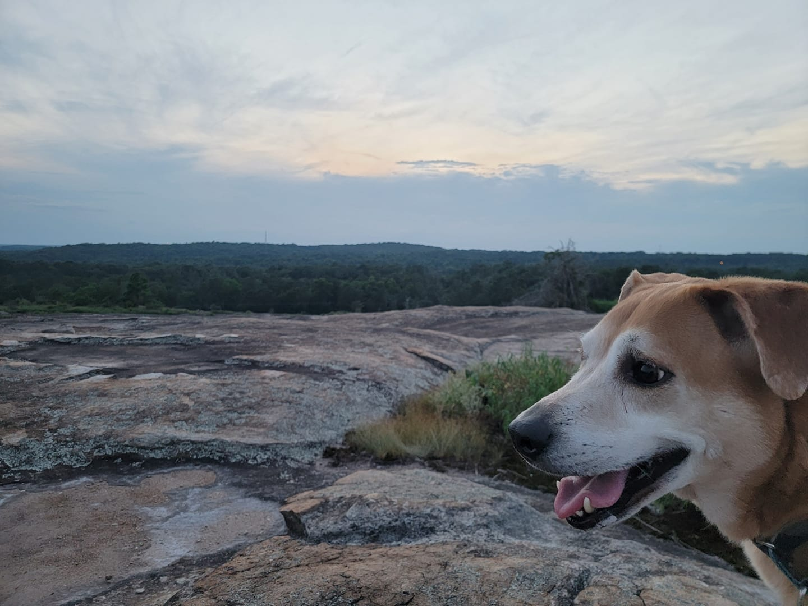

Woof!

This cutie is named Cosmo and he's a total sweetheart. I adopted him as a tiny puppy from the
Humane Society during the summer of 2013 and he's been my best "Budmo" ever since.
He's a Carolina Dog, which is apparently a pretty rare breed to have as a pet. No one could
figure out what he was in the beginning and it actually took a few trips to the vet for
a vet tech to recognize his breed. Carolinas are sometimes called "The American Dingo", as they're the
oldest indigenous dog breed in North America. And since Carolinas are a "mutt made of mutts",
a lot of the health problems that purebreds experience as they age have simply evolved out of
his breed in the wild. Score!